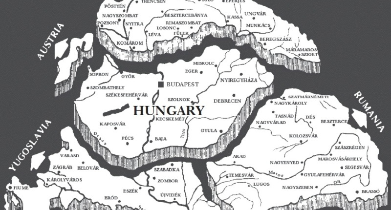
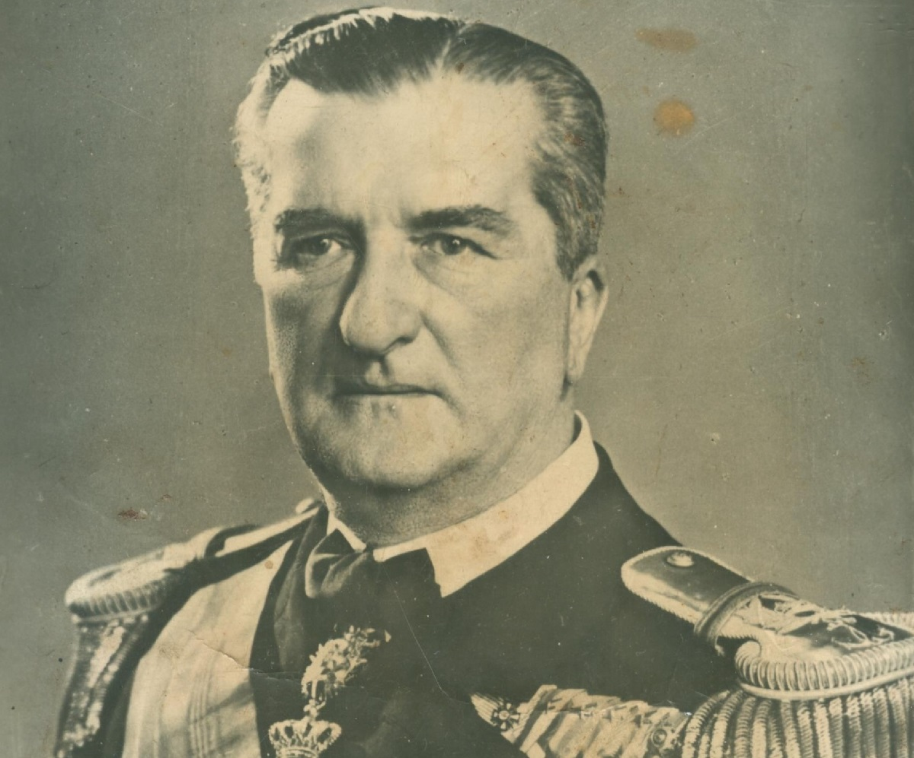
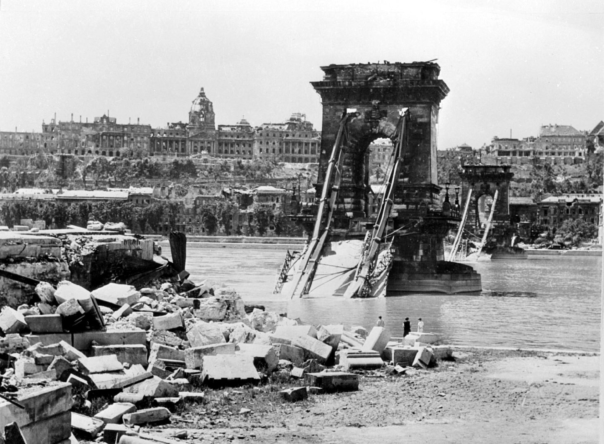

Magyarország a II. Világháborúban
A második világháború kiváltó okai a versailles-i békeszerződések megoldatlan problémáiból eredeztethetők. Németország, Olaszország és Japán már az 1930-as években megbontotta az első világháború utáni viszonyok rendjét és új pozíciókat szerzett. A győztes hatalmak közömbössége és engedékenysége okán hadipotenciáljuk gyorsan kifejlődött.
Német győzelmek és magyar terület területrevíziók
A magyar politikai és katonai vezetés 1938-tól várta a kedvező külpolitikai helyzetet és nagyhatalmak támogató hozzájárulását az elcsatolt területek visszaszerzéséhez. Revíziós törekvéseihez csupán a Németországtól és Olaszországtól remélhetett támogatást. Az ország ezáltal egy olyan kényszerpályára került, amelyről beszűkült mozgástere miatt nem lehetett letérni. A háború nélküli „győzelmek” sora Magyarország számára az első bécsi döntéssel kezdődött. A Csehszlovákia sorsáról határozó müncheni egyezmény értelmében a Felvidék déli körzeteit november 2-án visszakaphatta. 1939. március 15-én, Csehszlovákia szétesése után német jóváhagyással önálló hadművelettel Kárpátalját is visszaszerezhette. A német-lengyel háború idején semleges maradt, 1940 júliusában azonban közel került ahhoz, hogy Romániával konfliktusba keveredjék. Erdély visszaszerzését a Honvéd Vezérkar főnöke német segítséggel, a Teleki-kormány szükség esetében a magyar királyi Honvédség részvételével tervezte. A kérdést a román kérésre összeült német-olasz döntőbíróság oldotta meg, melynek értelmében a második bécsi döntés által Magyarország birtokba vehette Észak-Erdélyt és a Székelyföldet.
A környező országok megszűnte, illetve politikai, gazdasági és katonai erejük csökkenése miatt Magyarország Közép-Európában meghatározó tényezővé vált és egyben lekötelezettje lett Németországnak. Hitler ezt követően Magyarországot is csatlakozásra szólította balkáni hadműveletéhez. 1941. március 28-ai levelében nemcsak a Wehrmacht számára kért magyar területen átvonulást, hanem katonai részvétel ellenében a Délvidék visszacsatolását is ígérte. A Legfelső Honvédelmi Tanács április 1-jén úgy döntött, hogy a honvédség csak a jugoszláv állam felbomlása esetén vehet részt az offenzívában. A honvédség végül április 11-én Jugoszlávia felbomlása és Horvátország megalakulása után kapcsolódott be a német-olasz hadműveletbe. A 3. hadsereg a Gyorshadtesttel május 6-ig szállta meg Bácskát, Muraközt, Muravidéket és a Baranya-háromszöget.
Magyar veszteségek a német-szovjet konfliktusban

A német haderő 1941. június 22-én indította meg „Barbarossa” hadműveletét. A támadás a szovjet haderőt saját hadászati felvonulása közben érte. A német hadseregcsoportok szeptemberig elfoglalták Kijevet és ostrom alá vették Leningrádot. November 7-étől az USA Szovjetunió részére is fegyverzetet és felszerelést juttatott az ún. „kölcsönbérleti szerződést” keretében. Ezt követően sikerült a németeket megállítani és Moszkva előtt visszaverni
Magyarország egy nem provokált repülőtámadás okán kapcsolódott be a második világháborúba. Kassa bombázását, majd a Kőrösmező-Budapest közötti gyorsvonat szovjet gépek általi megtámadása után Bárdossy László miniszterelnök június 27-én az országgyűlés Képviselőházában bejelentette a két ország közötti hadiállapotot. Hitler kezdetben nem számolt a honvédség Szovjetunió elleni részvételével. A magyar hadvezetés a honvédség felajánlását szorgalmazta, a politikai vezetés pedig német felkérést várt ez ügyben. A Kárpát-csoport, július 9. után csak Gyorshadteste a német Dél Hadseregcsoport kötelékében július 1-jétől négy hónapig vett részt a harcokban és mélyen benyomult Szovjetunió déli területére. A nagy veszteséget szenvedett seregtestet jelentős anyagi veszteségek érték. Legsúlyosabb veszteségeit július 26-27-én Gordijevkánál szenvedte el, legsikeresebb harcait pedig Umanynál és a Dnyeper vonalánál hajtotta végre. - A politikai vezetés a győzelmek elmaradását és a szovjet ellenállást tapasztalva főcélként az ország területi épségét és erőinek megőrzését jelölte meg. A Honvéd Vezérkar újonnan kinevezett főnökének a németek irányába egy kevésbé elkötelezett katonapolitikát kellett képviselnie. A Gyorshadtest ugyan visszatérhetett, azonban öt gyalogdandárt kellett helyette útvonalak biztosítására és katonai közigazgatási feladatokra Ukrajnába küldeni. 1942 februárjától partizánegységek ellen is bevetették e csapatokat és részt vettek a szovjet Délnyugati Front offenzívájának elhárításában. A magyar csapatok júliusig sok főt vesztettek a partizánok elleni harcokban.
A súlyos személyi és anyagi veszteségek a német hadvezetést arra kényszerítették, hogy az 1942 tavaszi offenzívájában szövetséges haderőinek erejét is igénybe vegye. A magyar hadvezetés retorziótól tartva csak a követelések mérséklésére törekedett. Ennek értelmében kilenc könnyű hadosztály, egy páncéloshadosztály és egy repülő köteléket vonult el a keleti hadszíntérre. A 2. hadsereg 207 000 fős állományának összeállításánál a sorállomány kímélése volt a cél, a nemzetiségi hadkötelesek száma a hadseregen belül 20% volt. Fegyverzet és felszerelés terén igyekeztek a legjobban ellátni az alakulatokat. A nemzetiségi hadkötelesek aránya a hadseregen belül 20% volt. A 2. hadsereg kisebb része harcok árán, zöme pedig gyalogmenetben jutott ki a Donhoz. A szovjet 6. hadsereg ellen folytatott nyári hídfőcsaták során két jelentős hídfőállás maradt a folyó jobbpartján. A leharcolt csapatok ezután védelemre rendezkedtek be. A hadvezetés csupán némi fegyverzeti és felszerelésbeli pótlásokra hajlott és 45-50 000 fős kontingenst küldött az állomány fokozatos felváltására. A munkaszolgálatosok létszáma ezzel együtt 38 000 főre nőtt. A 2. hadsereg sorsát illetően a Kállay-kormány célkitűzése az volt, hogy feszült román-magyar viszony és a bizonytalan külpolitikai helyzet okán az országot kivezesse a háborúból. A Voronyezsi és Brjanszki Frontnak a magyar 2. és az olasz 8. hadsereg megsemmisítésére utasított seregtestei 1943. január 12-én és 14-én áttörték az arcvonalat. A VII. hadtest a január 17-ei visszavonulási parancsra körülzárásából kitörve vonult vissza. A szovjet vezetési hibáknak, a hatásos páncélelhárító rendszernek és a sikeres utóvédharcoknak köszönhetően a IV. és VII. hadtest zöme eljutott az Oszkol folyó mögé. A III. hadtest is ekkor tört ki bekerítéséből. A 2. hadsereg vesztesége 128 ezerre tehető, az anyagi veszteség 70%-os volt.
A Sztálingrád térségében 1942. november 19-én megindított szovjet hadművelet során a német 6. hadsereget bekerítették és 1943. január 31-én kapitulált. A szovjet csapatok ezután Orel, Kurszk és Harkov térségéig törtek előre, a németek azonban Harkov bevételével újból átvették a kezdeményezést. A legnagyobb páncéloscsata július 12. és 13. között Prohorovkánál zajlott le és eldöntetlen maradt. A szovjetek azonban előnyös helyzetet teremtve elfoglalták a Donyec-medencét és Kijevet is. Az angolszász csapatok július 10-én partra szálltak Szicíliában, majd Olaszország kilépett a háborúból. A szövetséges hatalmak teheráni konferenciáján egyeztettek a második frontról és a háború utáni rendezésről.
A Vörös Hadsereg téli-tavaszi hadműveletei során a Leningrád körüli ostromgyűrűt áttörve behatolt Észtország területére, elfoglalta az ukrán területeket és a Krim-félszigetet. Június 6-án az angolszász erők normandiai partraszállásukkal megnyitották a második frontot és megkezdődött a német csapatok visszavonulása. Eközben a győztes monte-cassino-i csatát követően június 4-én felszabadult Róma és augusztus 25-én Párizs is.
A háborúból való kitörés sikeres és sikertelen kísérletei
A magyar katonai és a politikai vezetés 1943 decemberétől azt remélte, hogy a szovjet haderő nem tartja majd szükségesnek a Kárpátok magyar csapatok által védett arcvonalának áttörését. A Kállay-kormány ismertté vált béketapogatózási kísérletei a német hadvezetést cselekvésre késztették. Csapataik 1944. március 19-én megszállták az országot és az 1. hadsereget a Dnyesztertől délre keletkezett hézag kitöltése érdekében támadó hadműveletre utasították. Az április 17-ei offenzíva során sikerült a Kárpátok előtti arcvonalat helyreállítani. Ezt követően a szovjet 18. hadsereg és az 1. gárda hadsereg több helyütt áttörte az 1. hadsereg arcvonalát. A Hunyadi-állásban megkapaszkodott erői támogatására új csapatokat vetettek be.
A szovjet csapatok nyári-őszi hadjárata során a finn-német erők kapitulációja után Finnország súlyos fegyverszüneti feltételeket írt alá. A harcok eközben belorusz területen, majd a lengyel határok előtt zajlottak. A déli arcvonalon megindított szovjet támadás hatására Románia augusztus 23-án kilépett a háborúból és hadat üzent Németországnak, Bulgária a szovjet hadüzenet okán ugyanezt tette. A német csapatok novemberben kivonultak a délszláv és balkáni államokból. Szeptember 17-étől a nyugati hadszíntéren egy angolszász légideszant hadműveletet vette kezdetét. Ennek kudarcára a német páncéloserők ellentámadásba lendültek, de előretörésük elakadt. A szövetséges erők a megmaradt német alakulatokat a Ruhr-vidéken bekerítették és április 25-én Torgaunál találkoztak a szovjet csapatokkal.
A honvédség utolsó támadó hadműveletét Erdély és Székelyföld megtartásáért a politikai vezetés szorgalmazta. A védelmükre megalakult 2. hadsereget ennek érdekében a Dél-Erdély felé néző nyugati magyar határszakaszon vetettek be. A 2. Ukrán Front seregtestei augusztus 26-án törtek be a magyar területre. A 2. hadsereg szeptember 5-ei offenzíváját a szovjet főerők gyors előretörése miatt be kellett szüntetni, és megkezdődött a Székelyföld kiürítése is. A IV. és VII. hadtest késői támadásukkal csupán Aradot vették birtokba. Az újonnan felállított 3. hadseregnek a Tisza vonalát és Nagyvárad körzetét kellett védenie. - Míg az 1. hadsereg az 4. Ukrán Front alakulatait az Árpád-vonalban próbálta megállítani, addig a 2. Ukrán Front seregtesteinek a 1. hadsereg hátába történő előretörését a 2. hadsereg igyekezett megakadályozni. A magyar és német alakulatok, kiváltképpen a 2. hadsereg tordai szakasza, október 8-áig tartották az arcvonalat. A magyarországi hadműveletek nyitányát az Alföldi páncélosütközet jelentette. Az október 6. és 31. között lezajlott harcok során a visszavonuló magyar 1. és 2., illetve a német 8. német hadseregek végül elkerülték a bekerítést, mivel a Debrecennél küzdő német csapatok merész ellencsapással az arcvonal hézagain benyomulva kimenekítették azokat. – Horthy október 15-ei proklamációja váratlanul érte a moszkvai előzetes fegyverszüneti tárgyalásokról tájékozatlan csapatokat. A honvédség alakulatainak minden előkészület nélkül, eddigi beállítottságával ellentétes módon kellett volna cselekednie. A háborúból való kiugrás kudarcához Horthynak a hadseregétől való elszakadása és hadvezetés képviselőinek passzív és negatív magatartása is hozzá járult. - Október végétől a szovjet hadseregcsoportok legfőbb célja Budapest elfoglalása volt. Miután menetből nem sikerült birtokba venni, a 4., 3. és 2. Ukrán Front csapataival északról déli irányba haladva fejezték be a főváros körülzárását. Az ostrom 1944. december 24-étől 1945. február 13-áig tartott, a német IV. páncéloshadsereg vállalkozásai a német és magyar védősereg felmentésére sikertelenül végződtek. December 28-án a Heinrici-Seregcsoport, a német 6. és 8., illetve a magyar 3. hadsereg kötelékében csak 14 magyar alakulat harcolt.
December 21-én a szövetséges hatalmak oldalán újjáalakuló Ideiglenes Nemzetgyűlés megválasztotta a végrehajtó hatalmat gyakorló szervét, az Ideiglenes Nemzeti Kormányt és hadat üzent Németországnak. A német haderő utolsó offenzíváját 1945. március 6-án a 6. SS. és a 2. páncéloshadsereg indította meg, azonban és a Duna megközelítése után egy hét után kifulladtak. A szovjet 2. és 3. Ukrán Front csapatai ezután három hét alatt megszállták az ország teljes területét és elfoglalták Bécset és Pozsonyt. Az 1945. februári jaltai konferencián a szövetséges nagyhatalmak Európa újjászervezését vitatták meg. Az itáliai német erők és Berlin védői május 2-án kapituláltak és Németország aláírta a feltétel nélküli fegyverletételről szóló okmányt. A február 4. és 11. közötti potsdami konferencia témája Németország volt. A Hirosimára és Nagaszakira ledobott atombomba hatására Japán szeptember 2-án elfogadta a feltétel nélküli kapitulációt. A második világháború a szövetséges koalíció teljes győzelmével ért véget. A katonai áldozatok összlétszáma 22, a polgári lakosságé 28 millióra tehető.
A magyarországi harccselekmények 1945. április 11-én Magyarbüks szovjet megszállásával értek véget. Magyarország teljes embervesztesége 900 000 főre tehető. 1944 tavaszán 450 000 magyarországi zsidót deportáltak, hadifogságba 570 ezren, köztük 150 000 polgári személy került. A magyarországi légitámadásoknak közel 20 000 fő esett áldozatul. A háború újabb területcsonkítással és a nemzeti vagyon 40%-ának elvesztésével fejeződött be.
English summary (angol összefoglaló)
After the I. World War, Hungary had one objective: the rewiew of peace treaty. Firstly they tried it peacfully, however the small antant's (Romania, Jugoslavia, Czechoslovakia) number one priority was to stop this. After some conclusion with the neighbors, Hungary maneged to make friends with Italy. They belived, that Italy was able to help them with their goal. However, the antant did not liked that. After that Germany offered some help too, and the situation became more intense. Germany was a worrysome ally in the II. world war. They did give back Hungary Erdély and Felvidék, however they forced Hungary to participate in the war. The country tried not to be involved, but after some mystirius attack they joined Germany, in the attack of the Sovietunion. Even then, Hungary attempted to break out the war, but Hitler figured it out and took over Budapest. When the war ended the USA and the SSSR called out Hungary a partner in crime with Germany and they had to punish it for that.